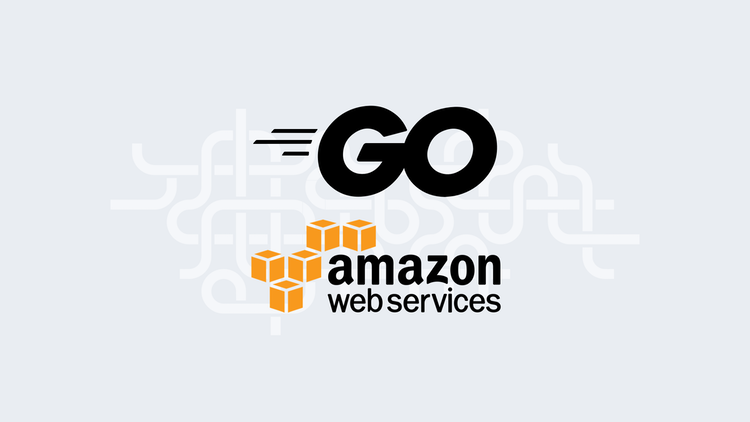
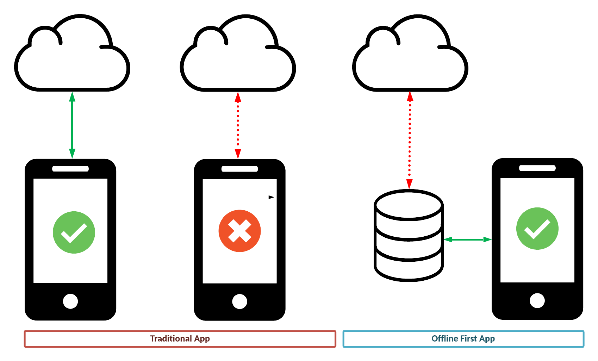
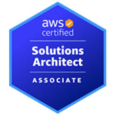
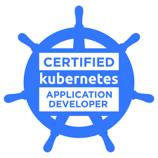

Hello I am
Manaswini Gogineni
Software Developer | DevOps Engineer | Cloud Enthusiast


Hello I am
Software Developer | DevOps Engineer | Cloud Enthusiast
Get to know more

2+ years
Software Engineer

MS Computer Science
University of Wisconsin- Madison
As a highly motivated and results-oriented software engineer, I bring over 2 years of experience in cloud infrastructure, backend development, and system optimization. Currently pursuing my Master's degree in Computer Science at the University of Wisconsin-Madison, I specialize in cloud technologies (AWS), back-end programming (Golang), and automation, with a proven track record of reducing operational costs, improving system reliability, and optimizing infrastructure.
I am committed to leveraging my technical skills and innovative mindset to develop scalable, efficient, and secure systems that solve complex challenges. With a passion for learning and collaboration, I strive to make meaningful contributions to any project I undertake, ensuring both individual and team success. Currently, I am open to exploring opportunities in software development, cloud engineering, and DevOps roles, where I can continue to grow and apply my expertise to drive impactful solutions.
Explore My
Relevant Courses: Operating Systems, Topics in Database Systems, Introduction to Computer Networks, Mobile and Wireless Networking
Relevant Courses: Embedded Systems, Control Systems and Automation, Digital Signal Processing, Machine Learning for Signal Processing, Wireless Communication Systems, Sensor Networks and Smart Devices
Relevant Courses: Mathematics, Physics, Chemistry
Developed and implemented a custom npm monitoring library package using AWS JavaScript CDK constructs, replacing Datadog and integrating a chatbot and Slack notifications, resulting in a 40% reduction in external monitoring costs and improved alerting efficiency.
Hosted weekly office hours to provide clarification on course materials, monitored the progress of student projects for course.
Courses: CS 764 - Topics in Database Management Systems, CS 407 - Foundations of Mobile systems and Applications
Developed, upgraded, and tested customized AWS Terraform modules, streamlining the infrastructure provisioning process and ensuring consistent deployments across environments, and improved infrastructure management efficiency.
Built and tested a Command-Line Interface (CLI) using Golang, enabling more efficient interaction with AWS services and improving automation processes, leading to a reduction in manual intervention and an increase in developer productivity.
Designed and developed a portal to observe user onboarding trends using Golang and AngularJS, providing real-time insights into user behavior and trends, which increased data-driven decision-making by 40% and improved user engagement tracking.
Browse My Recent
Projects

Built a fullstack chat app using MongoDB, ExpressJS, ReactJS, NodeJS. It is a Chat App with a lot of cool features like online indicator, uploads/attachments, auto-scrolling and many others

Implemented a robust, scalable, and automated DevOps pipeline for a Golang-based web application. The project spanned the entire software delivery lifecycle, encompassing containerization, CI/CD, infrastructure automation, and application deployment using cutting-edge DevOps tools and practices.

This is an offline-first note-taking React Native application designed to allow users to write down text even when their device is not connected to the internet. It utilizes AWS Amplify and DataStore for synchronization, enabling seamless data transfer to AWS when the device reconnects to the internet.
Have A Glance At My
Certifications


Get In Touch